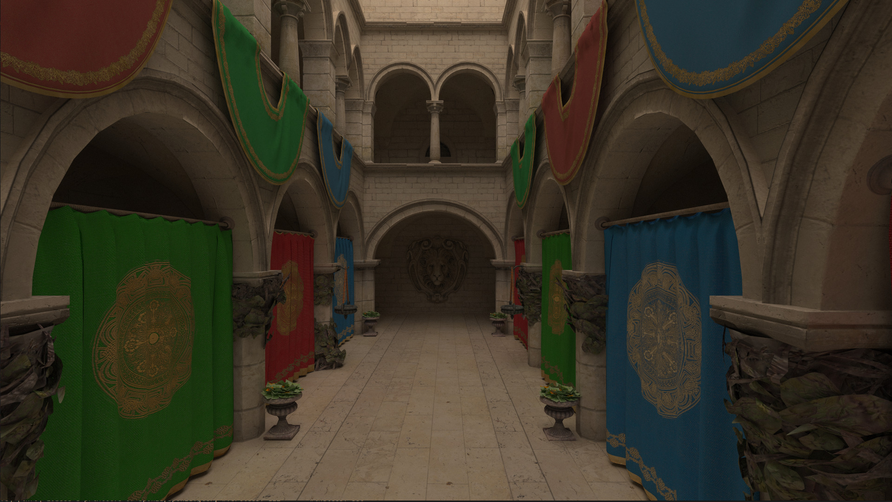
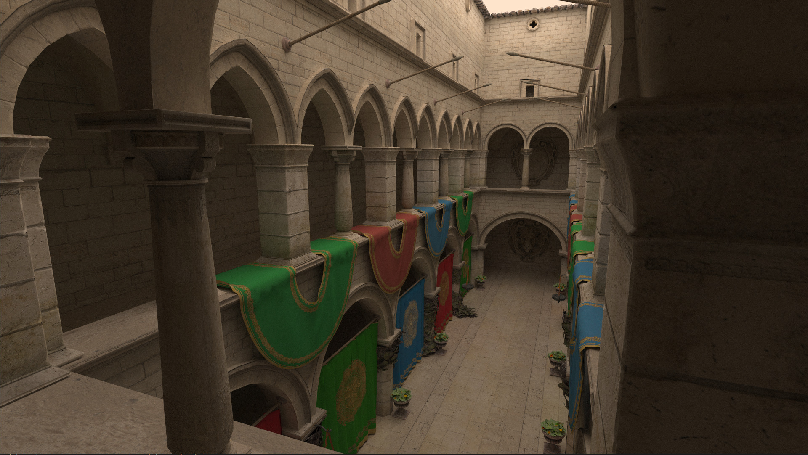
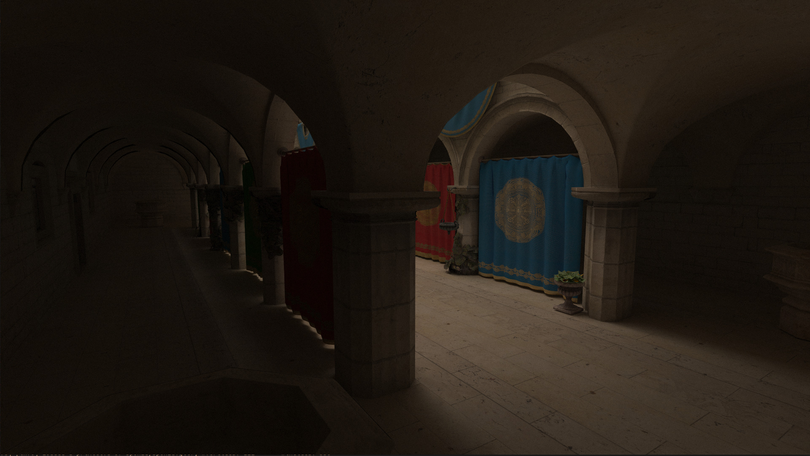
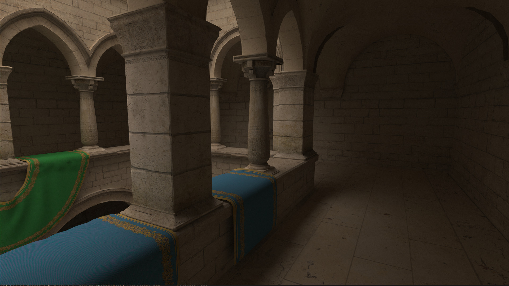

Last summer I decided it was time to buy a new laptop. Given how much time I spent using one I allocated a decent chunk of change. As should be clear from earlier posts, I also am very keen on feeding the GPU beast and making it sweat. One way to so: pathtracing. Recent developments in hardware accelerated raytracing did not go by me unnoticed and I could not wait to get my hands on one. As such, I settled on a laptop with a 3070; RTX enabled!
In 2016 the Khronos Group released Vulkan 1.0, which would soon be followed by Vulkan 1.1 which featured extensions that exposes a raytracing API that utilized these hardware units. After many hours of learning and developing, with the undisputed aid of Sascha Willems, I was able to render the famous Crytek Sponza model with uncompromising global illumination. All this while achieving a healthy 200fps, requiring only about 10 seconds before convergence of a 1920x1080 framebuffer.




In the raytracing pipeline there is initially limited information available about the surface with which a ray collides. Effectively, we only get the gl_PrimitiveID variable, which refers to a triangle in the index buffer. We then need to fetch each vertex of triangle and interpolate the normal and the texture using the barycentric intersection coordinates. Back in 2009, NVIDIA discovered that an imperfect thread scheduling was the biggest bottleneck for raytracing performance. Even after just monkey patching it on the spot using persistent threads, they correctly discovered that from that moment on raytracing is not a compute bound process, but memory bound instead (paper). The main reason is the random memory accesses patterns; Even neighbouring pixels may require different pieces of memory that are megabytes apart, completely thrashing the caching mechanism.
Whilst there are techniques to increase memory access coherence, like ray sorting and packet tracing, it is my understanding that these techniques rarely pay off in a modern GPU setting. Furthermore, if they did I'm sure the driver vendors have implemented these techniques under the hood of their Vulkan implementation. What I might be able to improve upon however, is minimizing the size of a single Vertex. By fitting more vertices in a cacheline, we might ever so slightly improve cache utilization and consequently increase performance.
My initial Vertex struct looked liked the listing below.
{% call macros.code("cpp") %} struct Vertex { glm::vec3 normal; glm::vec2 uv; } {% endcall %} However this is problematic because storage buffer alignment requirements state that each struct field should be 16 bytes alligned. Therefore we would have to add some padding: {% call macros.code("cpp") %} struct Vertex { glm::vec3 normal; float __padding_normal; glm::vec2 uv; glm::vec2 __padding_uv; } {% endcall %} Now this is of course very wasteful. Not only are we thrashing the cache, but are doing so with lots of bytes that we never even use. I claim that we can compress the normals to only 2 floats such that we can have struct like this: {% call macros.code("cpp") %} struct Vertex { glm::vec4 normal_uv; } {% endcall %} We can do this by relying on the mathematical invariant of a normal being of length 1: \(\sqrt(N_{x}^2 + N_{y}^2 + N_{z}^2) = 1\). Which means that if we ommit the z component, we can later find it again as \(N_{z} = \sqrt(1 - N_{x}^2 - N_{y}^2)\). There is a problem however, because square root yields two unique solutions: a negative and a positive one. Therefore we need one extra bit to save the sign of the z component. Since we don't have an extra bit to spare, we need to steal it. Let's take a look at the memory layout of a floating point number: {% call macros.code("sh") %} 0 10000010 11001001000011111100111 ^ ^ ^ | | | | | +--- mantissa = 0.7853975... | | | +------------------- exponent = 2 (130 - 128) | +------------------------- sign = 0 (positive) {% endcall %} The definition of a floating point number is kind of like the mathemical notation but then powers of two. The most information is in the mantissa, which represent a number between 0 and 1. If we want to represent larger numbers we can choose a positive exponent to get a final value \(2^{exponent} * mantissa \). Finally there is a single sign bit which dictates wether the number is positive. If we only deal with values between 0 and 1 (like normal components), we can speculate that flipping the least significant bit of the mantissa has minimal effect on the resulting floating point result. We are going to use this property to store the signbit of the z value in the least significant bit of the x component: {% call macros.code("cpp") %} { glm::vec3 normal = //...; glm::vec2 uv = //.. uint32_t* normal_x_as_uint = reinterpret_castDespite adding a few more compute operations to our shader, the reduced cache pressure due to a smaller Vertex type yielded a performance increase of 5%.
{% endblock %}